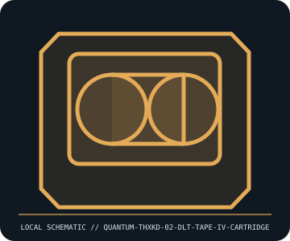

[ REMOVABLE MEDIA // MODEL-SPECIFIC RECORD ]
Quantum THXKD-02 DLTtape IV Cartridge
Quantum DLTtape IV 1/2-inch cartridge for DLT 7000/8000 generation. This catalog entry distinguishes the removable medium from its drive/reader and calls out model-specific fit and format caveats.

IDENTIFICATION: Transcribe the entire model/part number, capacity, generation and revision from the label or packaging. Confirm the exact host-device manual before inserting or writing.
Format, capacity and compatibility
| Product / part ID | Quantum THXKD-02 DLTtape IV Cartridge |
|---|---|
| Generation / format | Quantum DLTtape IV 1/2-inch cartridge for DLT 7000/8000 generation |
| Capacity and medium | Quantum part THXKD-02 DLTtape IV; capacity is drive/format-dependent—up to 40 GB native on a DLT 8000 (80 GB at assumed 2:1 compression); earlier DLT 7000 formats up to 35 GB native. Cartridge medium only. |
| Compatibility | Requires a DLT drive that supports DLTtape IV. DLT 4000/7000/8000 capacities and read/write generation support vary; the same shell does not imply full 40 GB capability. Do not confuse DLT IV with SDLT media. |
| Version and model caveat | THXKD-02 is Quantum DLTtape IV media, not an SDLT cartridge or a tape drive. 40 GB is the DLT 8000 native format maximum, not a universal cartridge capacity independent of drive. |
Handling and preservation
Keep cartridge closed and in its case; avoid dust, shock, smoke, moisture, magnets, and abrupt temperature changes. Inspect shell and leader before insertion. Preserve tape data by imaging/restore test using a correctly supported DLT drive; track cleaning and error history.
- Preserve original packaging, label, acquisition notes and any write-protect state; photograph the media before use.
- Make at least two independent copies of valuable data, verify checksums, and periodically test a restore. A removable cartridge or card alone is not an archival strategy.
Model and version notes
THXKD-02 is Quantum DLTtape IV media, not an SDLT cartridge or a tape drive. 40 GB is the DLT 8000 native format maximum, not a universal cartridge capacity independent of drive.
Standards and product-family sources establish the generation; exact model manuals, labels, regional revisions, firmware, interface and host support determine actual interchangeability.
Sources and standards
- Quantum — DLT/SDLT tape media product familyManufacturer media-family reference; product generation and drive model determine formatted capacity.
- Quantum DLT V4 drive manual (archived scan)Standards/vendor compatibility context for half-inch tape families; use the Quantum DLT drive manual for THXKD-02 specifics.
Manufacturer and standards references are preferred; archival manuals or museum records are identified when products are discontinued. Capacity and compatibility claims are scoped to the specific SKU and generation named above.